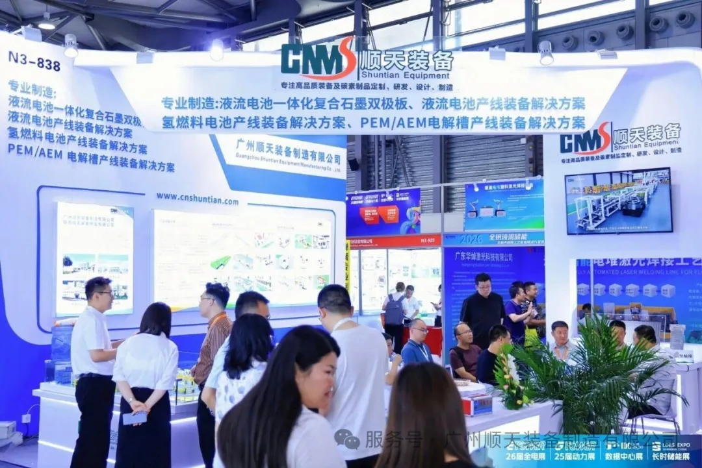
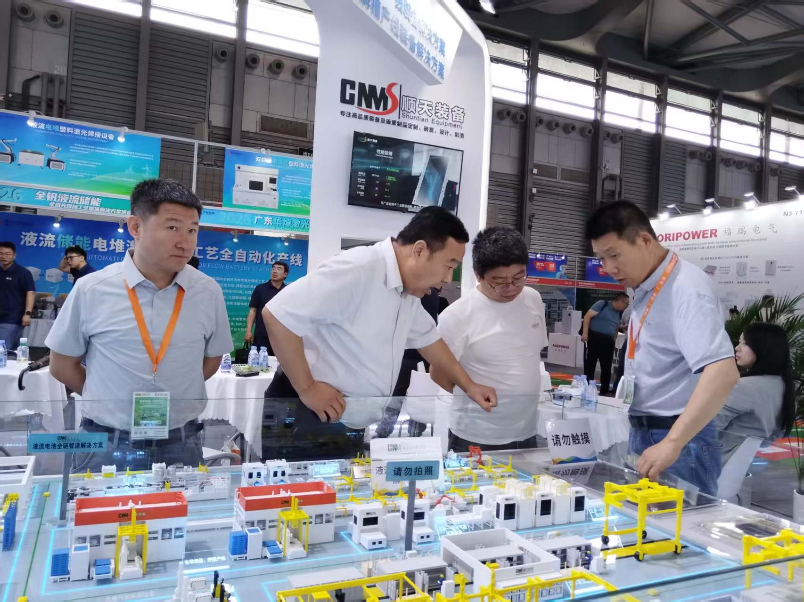
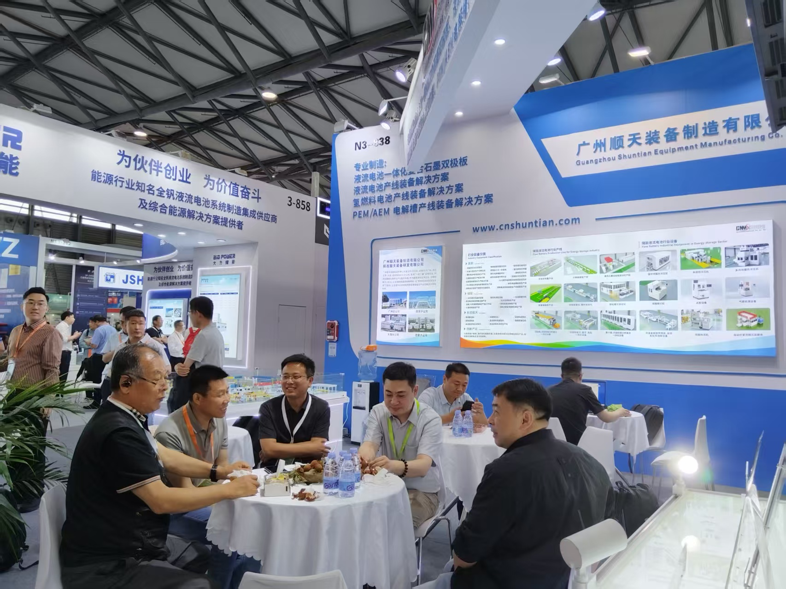
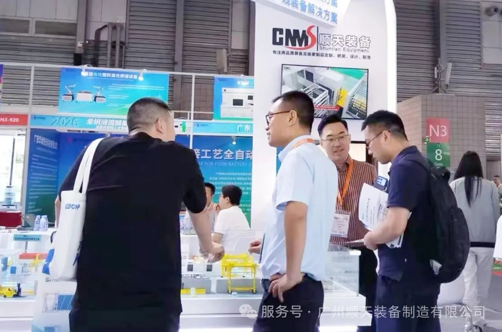
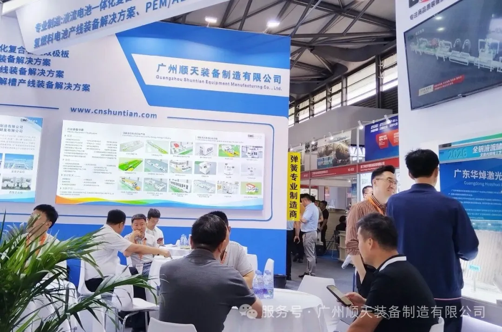
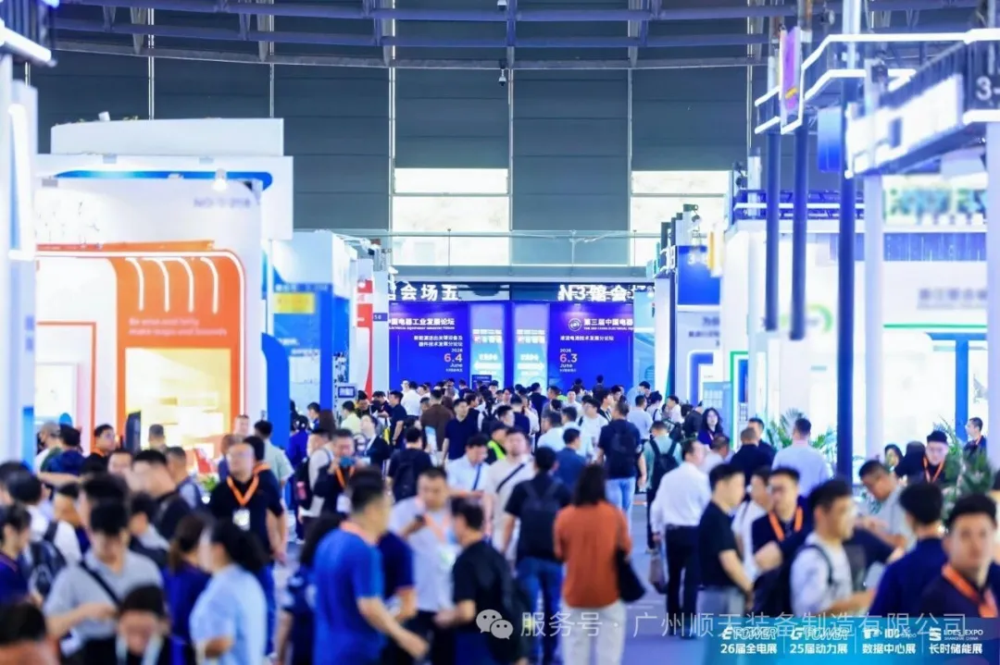

EVENT PLANNING / EXHIBITION
顺天装备亮相上海国际长时储能展
行业展会 · 产品展示 · 商务交流

01 / PROJECT OVERVIEW
项目背景
顺天装备参加第 15 届上海国际长时储能展览会，面向液流电池产业链客户展示液流电池极板及全链智能制造解决方案。借助展会汇集产业上下游的契机，通过产品展示、方案介绍与现场交流，传递企业在核心部件和装备领域的业务能力。
02 / OBJECTIVES
参展目标
通过展位及现场展示，传递企业在液流电池装备领域的业务方向。
集中介绍液流电池极板与相关产线方案，帮助客户了解产品与应用场景。
连接储能企业、科研机构与行业伙伴，开展需求交流与合作洽谈。
03 / MY ROLE
个人职责与贡献
围绕企业参展与产品推广，负责展会相关的品牌传播与筹备协调，贯穿展示内容梳理、宣传物料准备、现场执行配合与展后内容整理，支持企业在展会期间开展产品展示与客户交流。
结合参展主题与业务重点，梳理展示需求，协调相关团队推进展前准备。
围绕液流电池极板和装备方案整理展示内容，配合准备企业及产品宣传资料。
配合展位展示和现场活动执行，支持产品介绍、现场影像记录及沟通工作。
整理展会图片和活动信息，形成展后传播内容，并归档相关素材。
04 / EXHIBITION CONTENT
展示内容
围绕液流电池产业化需求，展位将核心极板、自动化装备与整体产线方案相结合，通过展板、模型和现场讲解，呈现从关键部件到装备配套的业务布局。
液流电池极板
展示一体化复合石墨极板，介绍产品结构、制造工艺及应用方向。
智能制造解决方案
介绍电堆组装、极板生产及检测等装备与产线配套方案。
现场交流与对接
结合模型与展示资料，围绕产线需求、产品采购和项目合作进行沟通。
05 / EXHIBITION APPROACH
参展展示思路
围绕行业展会中的展示与对接需求，以展位、产品资料和产线模型作为交流载体，将企业业务、核心产品和制造方案串联起来，让参展嘉宾能够从产品及应用需求出发了解相关方案。
通过展位形象和展示内容，集中呈现企业业务、液流电池极板及装备方案。
结合产线模型与现场介绍，帮助参展嘉宾了解液流电池智能制造的应用场景。
围绕产品采购、产线技改及项目研发等需求开展交流，并推进试样和考察等后续沟通。
06 / ON SITE
展会现场
展期内，团队通过现场讲解和商务洽谈，与来自产业链不同环节的参展嘉宾交流。现场图片呈现展位展示、方案介绍及客户沟通等场景。





07 / OUTCOMES
活动成果
通过展位展示和现场讲解，呈现液流电池极板及智能制造解决方案。
对接储能企业、科研院所及海外代理商，围绕实际需求开展沟通。
围绕产线技改、极板采购及项目研发形成初步合作意向，并推进试样和实地考察等后续对接。